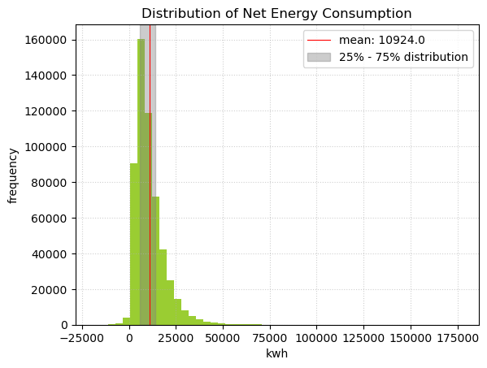
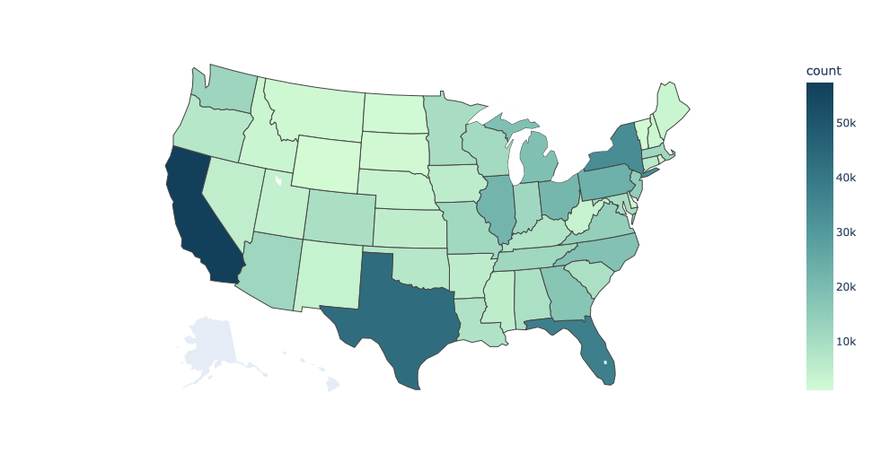
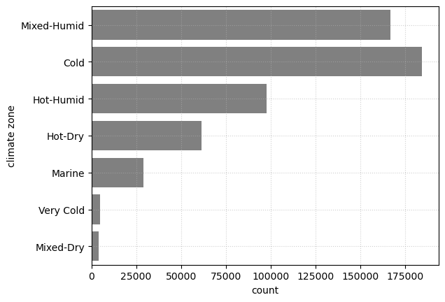
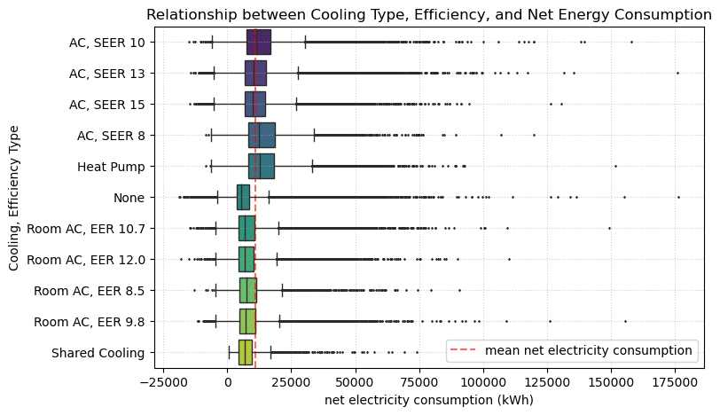

Predictive ML model for residential energy consumption
Used big data to build a machine-learning model that predicts building energy consumption using Python and SKLearn. Conducted exploratory data analysis, dimensionality reduction, and model selection using ensemble learning and crossvalidation.
Data exploration
The U.S. Department of Energy, working with the National Renewable Energy Laboratory, has generated a publicly available dataset to examine the relationship between different building characteristics and energy consumption. The dataset was generated by calibrating and validating a physics-based simulation model of US-wide building stocks with 548,912 observations and 227 variables.
Response variable
We picked net energy consumption in kWh as our response variable. This measures the total energy consumption minus the total on-site energy production.
The top five contributors to electricity consumption are cooling, plugs, heating, interior lighting, and hot water system. A photovoltaic panel helps offset some consumption, but this is very small compared to the overall consumption.
Predictor variables
 The data we have is distributed across the US states, except for Alaska. Most data are in California, Texas, Florida, and New York State. The state with the least data is Wyoming, with 1,106 data points. Most data points are distributed in cold, mixed-humid, and hot-humid climate zone.

Most homes in the dataset are single-family detached homes. Other types represented in this dataset are mobile homes, multi-family, and single-family attached. In the visualization, we see that multi-family homes tend to consume less net electricity relative to single-family homes. Furthermore, buildings with wooden frames consume less energy than buildings constructed with other materials, except for steel frame buildings with more than 5 units.
We know that air conditioning is the building element that consumes the most electricity on average. Buildings with poor efficiency AC systems, such as SEER 8 and heat pumps, tend to consume more electricity than the average.
Modeling
Baseline model
Our initial preprocessing gives us a dataset with more than 500,000 observations and 569 predictors. We split the dataset with an 80:20 proportion between the training and testing dataset. As a baseline model, we use a simple multi-linear model to predict total net energy consumption. Given that we have more than 500 predictors in various units, we standardized the units using the sklearn standard scaler. This way, we can visualize the relative importance of each predictor variable. This baseline result is quite promising since the model already explained 72% of what is happening in the dataset.
- train_MSE: 17,989,372.20
- test_MSE: 18,231,309.62
- r²: 0.72
Lasso regularization
Even though our baseline model performs well in prediction using the test dataset, it is not easily interpretable given the large predictor space. Therefore, we want to reduce the dimensionality without sacrificing much of the r2 score. The goal is to improve the readability and interpretability of our model. We utilized a lasso regularization process and tested multiple alphas to determine how much we could reduce the predictor space. As a result, we managed to reduce the number of predictors from 569 variables to 122 variables without sacrificing the accuracy of our model. With this finding, we are going to use this reduced dataset for further model selection to improve interpretability and to reduce computing time.
- Alpha: 100
- Predictor count: 122
- train_MSE: 18,567,502.81
- test_MSE: 18,807,948.23
- r²: 0.71
Dealing with collinearity
We dealt with collinearity by plotting out a bivariate correlation matrix of our predictors. We found that 13 predictors have correlation coefficients higher than 0.8 within our predictor space. We deal with this by dropping some of the collinear variables instead of making interaction terms as we want to optimize computing speed. As a result, we ended up with 107 predictors.
Polynomial model
Based on the residual plot of our baseline model, we know that our model might be non-linear. We want to test this by generating polynomial features for our numerical variables. We did not generate polynomial features for many binary/boolean variables as we deemed them inefficient. We iterate multiple degrees up until the fifth-polynomial degree. We found that the best degree that minimizes test MSE is 4. However the polynomial model does not significantly improve our baseline model.
- Best degree = 4
- Train MSE: 18,207,457.16
- Test MSE: 18,660,143.63
- r²: 0.718
Decision Tree
We fit an initial decision tree regression on our training dataset. We determined the optimal tree depth using a 5-fold cross validation, testing tree depths ranging from 1–20. We identified a maximum tree depth of 14 based on the highest mean validation accuracy score from our cross-validation.
- Maximum depth = 14
- Mean = 0.8097
- +/-2 standard deviation = [0.8049, 0.8146]

Once we determined our optimal tree depth, we ran the decision tree regression model with a tree depth of 14 on both the training and test datasets, and calculated their accuracy scores.
- Depth = 14
- Train accuracy = 0.8671
- Test accuracy = 0.8190
Using the decision tree regression gives us better results than the baseline model, however, we can improve on this model using ensemble methods.
Bagging
We implemented a bagging model using 100 bootstrapped samples, to create decision trees with a tree depth of 14. We ran the fitted model on the training and test data.
- Number of bootstrapped samples = 100
- Depth = 14
- Train r-squared = 0.8881
- Test r-squared = 0.8565
Using this ensemble learning method, we have improved the accuracy of our model applied to the test data compared to the single decision tree model.
Random Forest
We acknowledge that the bagging model increases collinearity by bootstrapping the ensemble trees. The Random Forest model helps with de-correlating trees and helps with over-fitting. We utilized 20 max tree depths and 100 trees in our Random Forest model and yielded a better result than the bagging model.
- Tree depth = 20
- Number of trees = 100
- train_accuracy= 0.9634
- test_accuracy= 0.8917

We also visualized the feature importance in this model using the mean decrease impurity (MDI). Some important features in this model are building size, heating type, cooling type, vacancy rates, building age, and the number of occupants.
Findings
We constructed the baseline model using simple linear regression. Despite the relatively high r² score, a model with so many predictors is difficult to interpret. To help with interpretability, we tried reducing the dimensions by checking collinearity and using lasso regularization. These steps help reduce the predictor space while maintaining accuracy, as proven by the negligible decline in r². We also tried checking possible polynomial dimensions in our predictors, but our polynomial model resulted in a lower r² than the baseline. One possible explanation is that we only tried testing a small number of degrees due to our lack of computing power. Further testing with higher polynomial degrees and conducting cross-validation may be needed.
We discarded the polynomial features in ensemble learning but maintained the reduced dataset from the lasso regularization. Our prediction progressively improves as we move through different ensemble models: decision trees, bagging, and random forest. Across these three models, random forest performs the best. We believe that this is because the model de-correlates dependent trees and handles over-fitting.
Finally, we generated a feature importance plot to see which variables contribute the most to the model. Building size as the top predictor is intuitive, as larger buildings require more electricity to operate. Heat types & cooling types are important, but interestingly building temperature baseline (temperature setpoints) is also highly important. Another interesting finding is that buildings without attics require more electricity. This might be explained by the fact that attics help to preserve heat.
In conclusion, our prediction model seems satisfactory as we yielded a high test accuracy score while managing to reduce dimensionality. We hope that this model can be utilized by end-users, such as homeowners, architects, builders, and local government, to push the agenda of building electrification as a means of built-environment decarbonization. By identifying key predictors, we can help policymakers to optimize energy consumption–including demand response (DR), demand-side management (DSM), pricing policies, and building regulations.
Limitations
We acknowledge that our dataset does not contain data from Alaska state. This is something that we cannot help with data pre-processing and engineering, as this is related to the data collection itself. Therefore, this model might not accurately predict electricity usage in Alaska. Furthermore, Alaska’s climate is different than the rest of the country. We need to train a new model to predict electricity consumption in Alaska.
This dataset also lacks the element of individual behavior. This might be important as it could help address behavioral factors related to energy consumption. This dataset is only limited to residential buildings. Therefore the model is not generalizable to other types of buildings that might be a better target for policy changes. Our model is also limited to the US context only. As different countries have varying geographical conditions, building types, and appliances, we might need to train a different model for each country, given that similar data is available.
Another caveat in our prediction is that the response variable is not normalized. In the future, we can try predicting net electricity usage per square footage or per capita. This might provide different insights and might help improve interpretability. Wilson et. al conducted a similar simulation in which they translated the outcome variables into monetary values that significantly helps with end-user decision-making process.